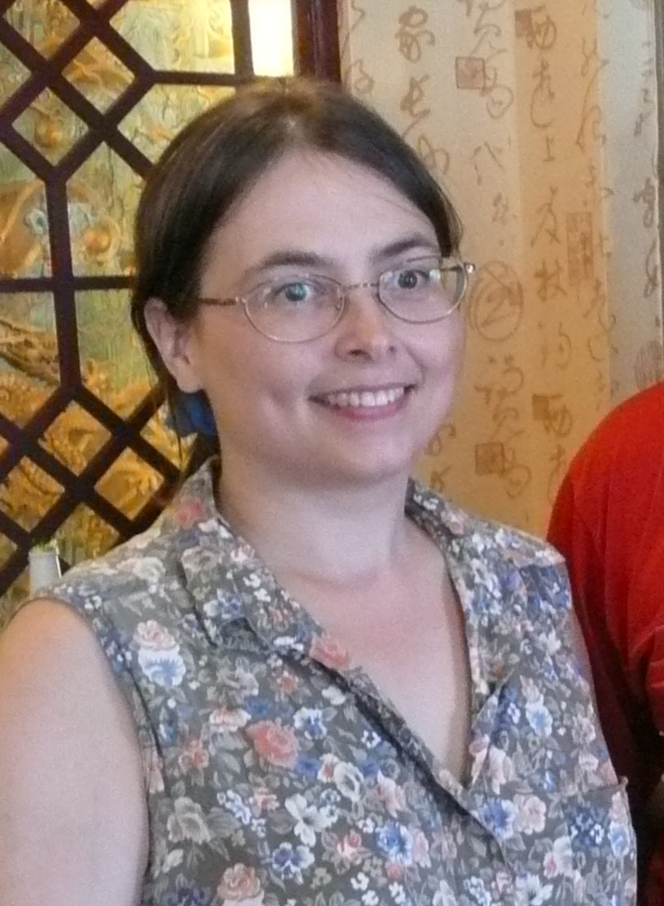

 |
Associate Professor 515 Williams Hall (802) 656-3181 |
As a sociocultural anthropologist who specializes in medical and psychological anthropology, Chinese culture, and the geographic areas of North America and China, Prof. Jeanne Shea's research interests revolve around gender issues, health and healing, human development and aging, and the lifecycle and intergenerational issues. She is interested in cultural and generational differences in experiences of the lifecycle, human development, and aging, in the types of health concerns and social issues that mark lifecourse transitions, and in the influences of gender, class, ethnicity, culture, and generation on experiences of health, illness, healing, and the health care system. In the broadest sense, she is concerned with issues related to cultural processes, ethnic identity, socioeconomic class, economic development, and social change.
Prof. Shea's life history began with a childhood in northern Vermont and a yearning to learn about foreign languages and cultures. She went on to earn a B.A. in Asian Studies from Dartmouth College in 1989, followed by an M.A. and then a Ph.D. in Anthropology from Harvard University in 1994 and 1998. Between 1986 and the present, over the course of six trips, she has spent three cumulative years living, studying, and doing research in the People's Republic of China. Her research in China has included field work on menopause and aging among Chinese women living in Beijing and investigation of contemporary issues surrounding romance, sex, and marriage in later life in mainland China. She has been an Assistant Professor at the University of Vermont since 1998, at which time she began a new research project on the Chinese community in Montreal, Quebec. At the University of Vermont, Prof. Shea works with a wide variety of departments and programs, including the Anthropology Department, the Area and International Studies Program, the Asian Studies Program, the Canadian Studies Program, the ALANA US Ethnic Studies Program, the Women's Studies Program, the Center for the Study of the Aging, and the Graduate College.
To learn more about Professor Shea and the courses she teaches, visit her web site.
For course information, please visit Professor Shea's blog.